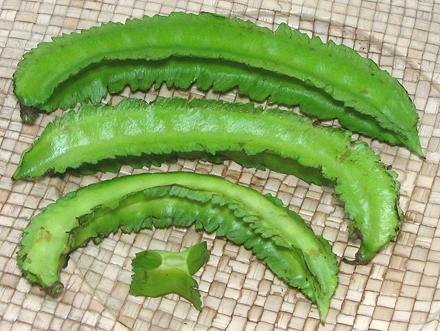
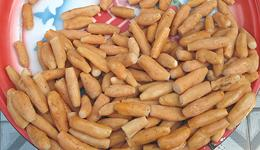
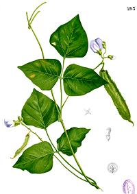

Winged Beans

[Manila bean, Goa bean, Mauritius bean, Asparagus pea, Four-angled bean,
Four-cornered bean, Winged pea; Sigarilyas, Kalamismis, Parlang
(Philippine); Dau Rong (Viet); Psophocarpus tetragonolobus]
This tropical bean may have originated in Madagascar, but is now grown
throughout the Asian tropics. The pods are the most common part used for
food, but the tuberous roots are also quite popular. The seeds from
mature pods, high in protein and oil, are eaten, but require long cooking
to destroy trypsin inhibitors. Flowers and leaves are also edible and
quite high in protein. The photo specimens were up to 7 inches long
and 7/8 ounce.
Because of its high yield, high nutrition, fast growth and easy
cultivation this bean is considered an "under-utilized" crop well worth
introducing to tropical regions where it is not yet much grown, such as
South and Central America, Africa and the Caribbean.
Previously, these could be grown only in the tropics, needing heat,
lots of water and specific day length and night temperature. The new
Hunan variety from China has made it practical to grow these in
temperate regions.
More on Beans, Peas & Lentils.

Root Tubers of the winged bean can be eaten raw or cooked and are
20% protein, much higher than other edible roots. They have a nut-like
flavor. Some varieties don't produce root tubers, and the size of tubers
is affected by climate (cooler, bigger tubers). The photo specimens were
being sold as snacks by a street vendor in Burma.
Photo by Wagaung distributed under license
Creative Commons
Attribution-Share Alike 3.0 Unported.

Leaves and Flowers:
Winged bean flowers and leaves are
quite edible and the leaves have a much higher protein content than do
most green leaves, 10% to 15%. Leaves can be cooked like spinach or eaten
raw in salads, and flowers are a colorful, edible decorative for salads.
Watercolor painting of plant from Flora de Filipinas
by Francisco Manuel Blanco (O.S.A.) copyright expired.
Pods:
These have an interesting flavor, usually described
as between snap peas and asparagus. They also have a very interesting
shape and texture, with a light crunchiness. The crunchiness is still
apparent with simmering up to 30 minutes. They are usually harvested
between 4 and 6 inches long, but are said to be at their best at 4 inches
or less.
Buying:
These are still very scarce in North America,
but have finally started to appear in the Asian markets of Los Angeles
(2017). Some are said to also be grown in southern Florida. The new
Hunan variety or similar is probably the one now grown in Southern
California. The photo specimens were purchased from a large Asian market
in Los Angeles (San Gabriel) for 2017 US $4.99 / pound.
Cooking:
Young pods can be eaten raw in salads, whole
or cut, depending on size. In the Philippines, larger beans are often
just sliced crosswise in short segments and stir fried with shrimp
or pieces of pork, but they also work well in stews. Care should be
taken not to over-cook, as they should have some crunch. Larger beans
(4 to 6 inches) will still have some crunch after simmering up to 30
minutes.
Subst:
Snap Peas are probably your best bet, but
adjust cooking time so they aren't overcooked. Recipes for Winged
Beans can also be made with Long Beans, but the dark flavor of the
Long Beans is quite different.
bp_wingedz 140326 r 170109 - www.clovegarden.com
©Andrew Grygus - agryg@clovegarden.com - Photos
on this page not otherwise credited © cg1
- Linking to and non-commercial use of this page permitted